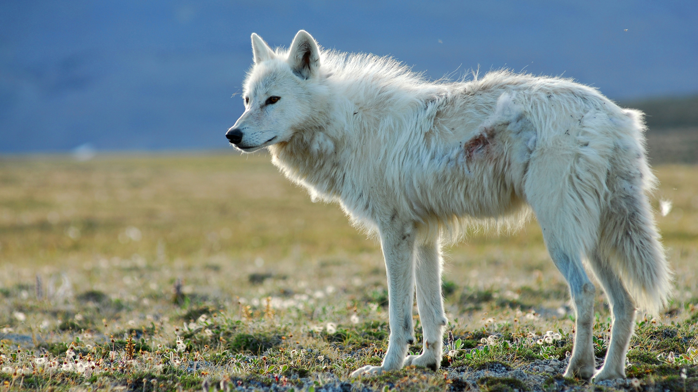
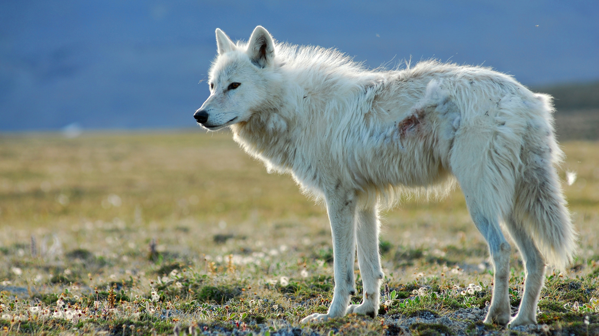

The were about the size of and their hair was so white that even the snow hardly looked white compared with them;
their branching horns were and shone like something on fire when the sunrise caught them.
Their harness was of and covered with bells.
On the sledge, driving the reindeer, sat a fat who would have been about three feet high if he had been standing.
He was dressed in polar bear`s fur and on his head he wore a red hood with a long hanging down from its point;
his huge beard covered his knees and served him instead of a rug.
But behind him, on a much higher seat in the middle of the sledge sat a very different person — a great lady, taller than any woman that Edmund had ever seen.
She also was covered in up to her throat and held a long straight in her right hand and wore a golden crown on her head.
Her face was white — not merely pale, but white like snow or paper or , except for her very red mouth.
It was a beautiful face in other respects, but proud and cold and
The sledge was a fine sight as it came towards Edmund with the bells and the dwarf and the on each side of it.
C.S Lewis. The Lion, the Witch, and the Wardrobe
 
